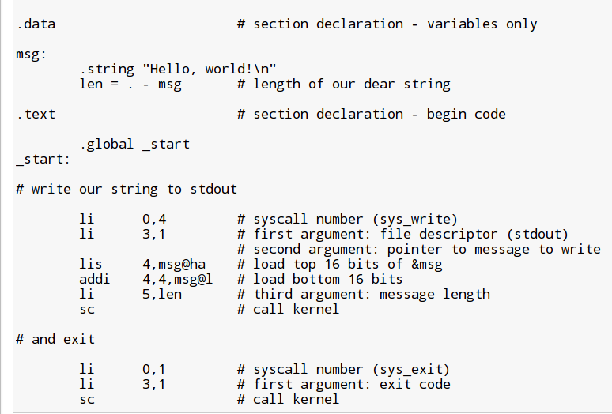
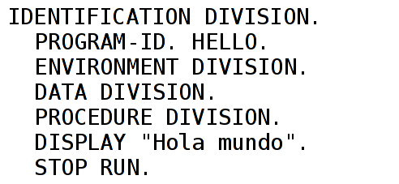

El Software
Computadoras
- Modelo Computacional Binario Elemental
- Concepto de Programa Almacenado
- Lenguaje de máquina o Código de Máquina
Lenguaje de Máquina01011110 10100101 01100110 11111101 00100000 00000001 00000000
Lenguaje Assembly
LD 30
SUB 5
ST 6
JZ -3
HLT
1
0
Assembly y Assembler
- Lenguaje ensamblador o Lenguaje Assembly
- Programa ensamblador o Assembler
- Programa en ensamblador o programa en Assembly
- Assembly ⇨ Código Máquina
Assembly y Assembler
- Lenguaje ensamblador o Lenguaje Assembler
- Programa ensamblador o Assembler
- Programa en ensamblador o programa en Assembler
- Assembler ⇨ Código Máquina
Assembler
- Leer programa en Lenguaje Assembler línea por línea
- Traducir a los bytes de instrucciones
- "L"+"D"+" "+"4" ⇨ 01000100
Assembler
- Programa en Lenguaje Assembler = Código fuente
- Programa en Código máquina = Código objeto
Ensamblador
Diferentes arquitecturas
Diferentes arquitecturas - PowerPC
Diferentes arquitecturas
Diferentes arquitecturas- ARM

Lenguajes de bajo y alto nivel
- LD 10; SUB 11; ST 12
- SALDO = DEUDA - PAGO
Lenguajes de alto nivel
- FORTRAN, COBOL
- Pascal, C, C++, C#, Java, Ada
- Python, Perl, PHP
- Lenguajes "de cuarta generación"
Hello World
Hello World - COBOL
Hello World
Hello World - Java
Traductores de Alto Nivel
- Intérpretes
- Compiladores
Desarrollo de aplicaciones
- Ambiente de Desarrollo
- Herramientas
- Ambiente de Desarrollo Integrado: IDE
Eclipse IDE

Herramientas
- Editor
- Traductor (compilador o intérprete)
- Bibliotecas
- Vinculador (o linker)
Ciclo de compilación
- Editar ⇨ programa fuente
- Compilar ⇨ código objeto
- Vincular ⇨ código ejecutable
Ciclo de compilación